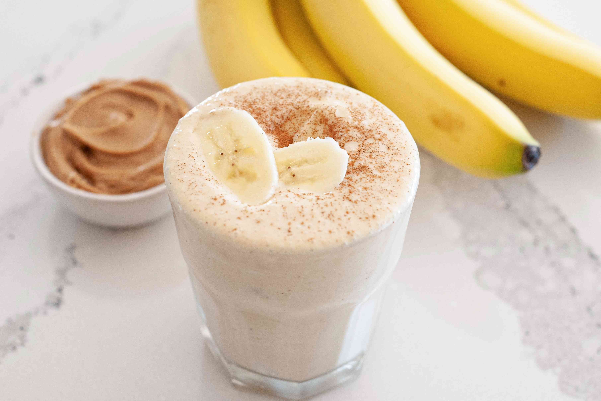

Peanut Butter Banana Shake

Description
Breakfast, lunch, dessert, or snack time, any time's the right time for this delicious banana shake. With hundreds of ratings and reviews from our community, this easy shake recipe is a 5-star favorite, and it's ready in less than 5 minutes.
Ingredients
- 1 cup whole milk
- ¾ cup ice
- ½ frozen banana
- 1 tablespoon sugar-free peanut butter-flavored syrup
- 2 tablespoons powdered peanut butter
Steps
- Combine whole milk, ice, banana, peanut butter syrup, and PB powder in a blender; blend until smooth.